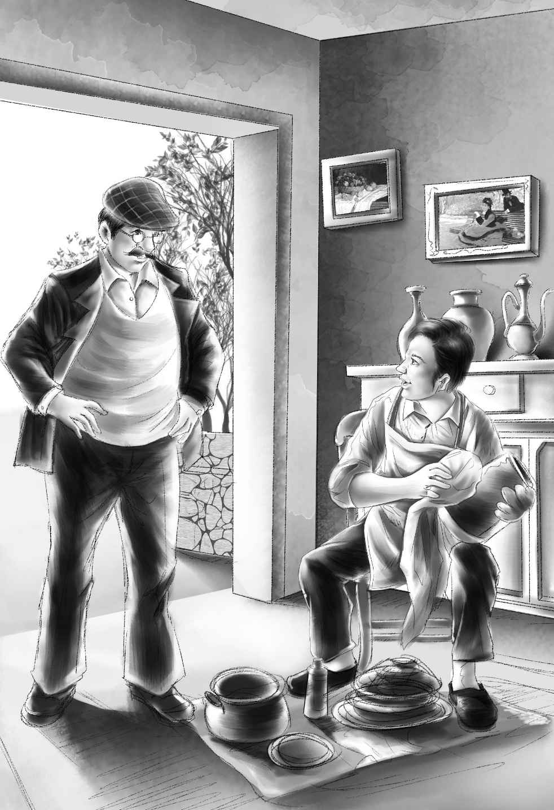

“Thank you for coming，Doctor，”said Captain Daniel，as they walked toward the fisherman’s hut．“You will see that it’s all right．”
Soon they came to the hut．A young man sat in the door，fixing a lobster pot．
“Hello，”he said，looking up．
“Hello，”replied Dr．Moore．“I’m a doctor，and I thought I would come to see you．Mr．Alden is leaving his four grandchildren on the island with Captain Daniel．”
The young man smiled．“Yes，I know，”he said．“I’m glad you came．”
“He’s a very handy man，Joe is，”put in Captain Daniel．“He’s a big help to me．”
“I’d like to tell you about myself，”said the young man．“Please sit down a minute．”

“I used to live around here，”he went on．“Last year I went off to explore a place，and dig up old Indian things．One day I fell from a very high rock，and broke my arm．For a long time I didn’t know who I was．”
“Now do you remember who you are？”asked Dr．Moore．
“Yes，I think I’ll tell you．”The young man whispered a name．
“You can’t mean it！”cried Dr．Moore．“How strange！ Who found you after you fell？”
“An old Indian found me，and took me to his hut．He took care of me，and got a doctor to fix my arm．I came here to Captain Daniel as soon as I remembered who I was．”
“Why didn’t you go right back to your home？”asked Dr．Moore．
“Because I wanted to be perfectly well before I went home．You see，I used to live with my uncle．It didn’t seem right for me to go back home until I was sure that I was well again．”
“I see，”said Dr．Moore．“Come over some day to see me，and tell me some more．I will look at your arm then．”
“It is almost well，”said the young man．
“Good！”said Dr．Moore．“You are doing the right thing．You should stay here and help Captain Daniel．You will like the four children when you get to know them．”
“I’m sure I shall，”said the young man．“You won’t tell anyone about me，will you？”
“No，I won’t，”promised the doctor．“I will say that you are Captain Daniel’s old friend and a handy man．The children can call you Joe．”
“Right！”said Joe．“My middle name is Joseph，anyway．”
Dr．Moore and Captain Daniel went back to the barn，leaving the strange handy man still fixing the lobster pot．
“Do you feel better now，Captain？”asked the doctor．
“I should say so！ Thanks for fixing it up．”
“The stranger is all right，Mr．Alden，”said Dr．Moore．“Joe is a very fine fellow，he’s very handy，and Captain Daniel has known him all his life．”
“You are sure then that everything is all right？”Mr．Alden asked sharply．
“Yes，”said the doctor．“The children will like Joe．”
“I want to go and see Joe，”said Benny．
“Not now，”cried Henry．“We haven’t time．Don’t you remember we are going back to the mainland and buy groceries and dishes？”
“Of course I remember！”said Benny．“I’ve been waiting and waiting．”
Captain Daniel took them back to the mainland．The doctor and his mother left the others at the store．
“We had a wonderful time seeing your new home，”said Mrs．Moore．
“May we come again？”asked Dr．Moore，with a twinkle in his eye．
“You know you may，”said Jessie，smiling back．“Come any time after we get some dishes．”
“Come on，Jessie，”said Benny．“Let’s buy things．”
“Right，”said Jessie．And they all went into the store．They walked straight to the piles of cooking dishes．
“We are going to get a lot of dishes，”said Jessie．“May we have a big box first，so that we can put the things into it as we find them？”
“Certainly，”said the girl．“How is this one？ Is it big enough？”
“That’s just fine，”said Henry．“Look，Jessie，see that big pail？ We ought to have two，one for drinking water，and one for dishwater．”
“That’s a good idea，”said Jessie．“I hope we won’t forget anything．”
Soon they had everything they wanted．
“It’s four o’clock，”said Henry．“Let’s go up to the house and get our swimming suits and towels．”
“And my bear，”cried Benny．
“We will get your bear if we don’t get anything else，”said Jessie．
“I think we’ll have to pack another box at the house，”said Henry．
“Let’s pack old clothes，”said Jessie．“We certainly don’t want to wear these school clothes．”
“I should say not，”said Henry．“We couldn’t explore an island with good clothes on．”
“Are we going to explore？”asked Benny．
“Yes，Benny，”said Violet．“I’m going to take my paints and make pictures of things we find．”
“Good！”cried Henry，who liked Violet’s little pictures very much．
By this time they had come to the house．“Let’s find what we want to take，”said Henry，“and bring it to Jessie’s room．”
Mrs．McGregor，the housekeeper，met them at the door and said，“Jessie，don’t you want to see what Mr．Alden has bought，before you pack your things？”
“Bought？ Yes，indeed，”replied Jessie．
Upstairs on Jessie’s bed was a big pile of new play clothes．There were four pairs of brown shoes，too．
“Just think of Grandfather’s getting all these！”cried Jessie．“Just what we need．Let’s each put on one of these suits and not take any school clothes at all．”
“I like my new shoes，”said Benny．He sat down on the floor and began to take off his old shoes at once．
Mr．Alden smiled as he sat alone downstairs in his big chair and listened to the happy shouting．
“Now for the packing box，”said Henry．
“Wait！”said Jessie．“Don’t bring the box up here．Each one of us can carry some things downstairs．”
“I’ll take the towels and my tools，”said Henry．
“Violet and I will carry the workbag，paints，the swimming suits，and the other clothes，”said Jessie．“Benny can bring the flashlight and the rest of the things．”
They all went downstairs with their arms full．
“Now did we forget anything？”asked Jessie．
“We forgot my bear，I guess，”said Benny，who had come downstairs again with a very funny-looking animal in his hand．He laid the bear beside the box．
“The most important thing of all！”cried Jessie，packing the bear carefully in the box．
“We’re all ready to go，Grandfather，”said Henry，when the bear was added to the box．“Are you sure you won’t be lonesome？”
“Thank you，my boy．No indeed！”said Mr．Alden quickly．He knew the children would not go at all unless he were careful．“I wouldn’t go with you if I could．I need a little rest without any children or dogs around．”
The children did not need to look up to see the twinkle in his eye，for they knew very well that he liked to have them near him．
“You won’t hear Watch bark at the milkman for a long time，”said Benny．
“What shall I do，Benny？”asked his grandfather．“I shall miss the barking and noise in the morning．”
“Good by！”called everybody，as the car started．Mr．Alden and Mrs．McGregor waved until the car was out of sight．
“They’re wonderful children，”said Mrs．McGregor．“They are very clever．And yet they’re never too busy to be kind to everybody．Even little Benny，now，didn’t forget to say ’Good-by’ to the cook．”
“Thank you，Mrs．McGregor，”said Mr．Alden．“That means a lot to me because you know them so well．”
He smiled as he went back to his big chair．He wanted to think about the children as they went across the island and into their new home．
The children got out of the car at the dock．
“Don’t you forget that bread and milk，Jessie！”said Benny．
“Oh，my！”cried Jessie．“We almost went over without a thing to eat．How lucky we are to have a store so near this dock．Let’s get lots of bread and milk．If we have bread and milk，we can live without eating anything else．”
“I have to have my vegetables，”said Benny．
“Of course，”said Jessie，laughing．“We’ll have lots of other things．”
“I want some supper now，Jessie，”said Benny．“I don’t want to hear any more talking about it．”
Jessie laughed．“I’m glad you are so hungry，Benny，”she said．“I almost forgot to buy our supper．It’s only six o’clock．We can have supper ready in an hour．Here comes Henry with the bread and milk．”
“I can’t wait an hour，”said Benny．“I have to go to bed in an hour because Mrs．McGregor says so．”
“Not tonight，Mr．Benny，”said Henry，laughing．
Captain Daniel put the boxes into the boat and started the motor．In a very short time they came to the island，and Captain Daniel helped the children carry the boxes to the barn．
“Good luck！”said Captain Daniel，as he set down the last box．“I hope you will like your new home．”
“Oh，we shall！”Jessie called after him．“And thank you．You have been so kind to us．”
“Now！”said Henry．“Let’s get to work．”
“Oh，isn’t this exciting！”cried Jessie．“You open the boxes and Benny and I will set up the table．”
What a noise they made！ Henry took off the cover of the box．The others pulled out the barrels and laid the wide board across them．Then the whole family unpacked the blue-and-white dishes．
“We’ll wash four bowls and four spoons，”said Jessie．“We won’t heat water to wash all the dishes tonight．It is lucky that Captain Daniel brought us a little water．”
“No，”said Violet，“we can’t put things away until we have a dish cupboard．”
“Tomorrow，”laughed Henry，“I will make that dish cupboard the very first thing．”
Violet piled the bread on a plate，while Jessie put two bottles of milk on the table．So with packing boxes for chairs，the four children sat down．They put the bread into the bowls and poured the cold milk over it．With their new spoons，they began to eat their first delicious supper in their new home．
“We must get something for Watch to eat，”said Henry，as the dog ate two big slices of their bread．
“How many pieces of bread may I have，Jessie？”asked Benny．
“All you want！”cried both Jessie and Henry．
When supper was over，Jessie got up so suddenly that her chair went over．“Let’s wash these dishes right away，”she said，“and then make our beds．”
So the children started for the spring，each with a bowl and spoon．They soon saw that the water from the spring came up into a barrel and ran over the top．The stream ran into the woods．
“We had better wash dishes in the stream because we may want to drink the water in the barrel，”said Henry．
As he waited for the others，he thought he saw a vegetable garden on the other side of the house．He could not see very well because it was getting dark．“A funny thing to find on an island，”he thought to himself．
“I’m going to bring down my own bed myself，” said Benny，starting back to the barn．“I want the stall right next to Jessie’s for my bedroom．”
“He’s sleepy，”said Jessie，looking at her little watch．“It’s eight o’clock，and I’m sleepy，too．”
After all the children were in bed，Jessie sat up suddenly and listened．She heard a sleepy little voice saying over and over，“Jessie，I want my bear．I want my bear．”
She got up at once．With the flashlight，she soon found the funny-looking animal in the packing box and took it to Benny．
When Jessie woke again，it was morning．